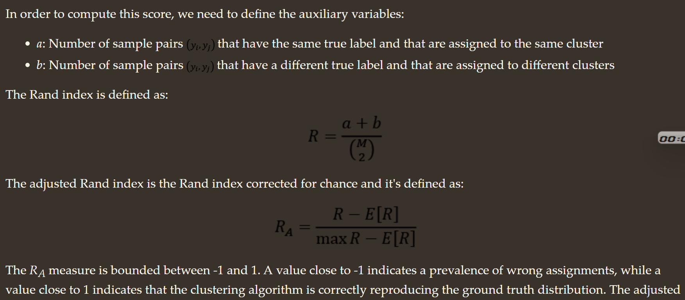
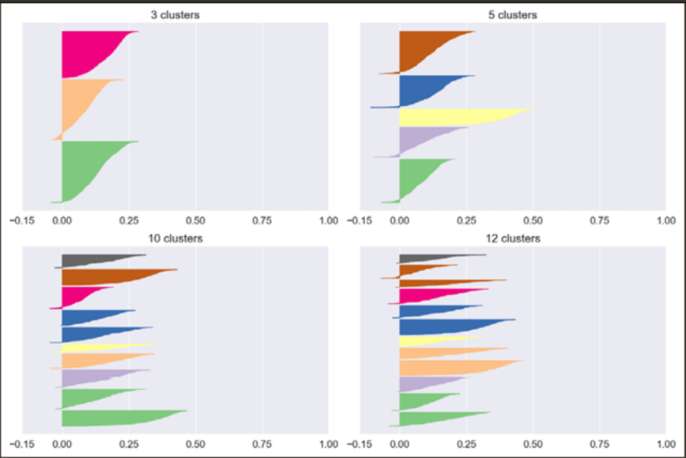
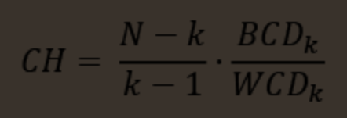
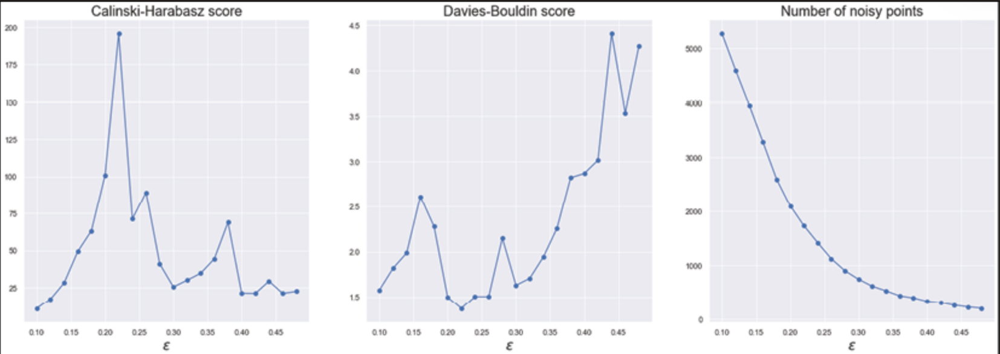
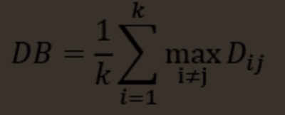

1. Important Functions
# This function plots the confusion matrices given y_i, y_i_hat.
# NOTE: make sure the predicted labels are NOT probabilities.
# predicted_y =np.argmax(test_predicted_y, axis=1)
# plot_confusion_matrix(y_test, predicted_y+1)
def plot_confusion_matrix(y_test, y_pred):
C = confusion_matrix(y_test, y_pred)
A = (((C.T)/(C.sum(axis=1))).T)
B = (C/C.sum(axis=0))
liOfMat = [C, B, A]
liOfTitles = ['Confusion Matrix', 'Precision Matrix (Column Sum = 1)', 'Recall Matrix (Row sum = 1)']
labels = [1, 2, 3, 4, 5, 6, 7, 8, 9] # Change this based on problem.
# Representing matrices in heatmap format.
for i, mat in enumerate(liOfMat):
plt.figure(figsize=(20, 7))
sns.heatmap(mat, annot=True, cmap='viridis', fmt='.3f', xticklabels=labels, yticklabels=labels)
plt.xlabel('Predicted Class')
plt.ylabel('Original Class')
plt.title(liOfTitles[i])
plt.show(
Confidance Interval
Multiple Techniques:
- Confidence Interval using Normal Approximation
- How to use with cross_val_score
- Example on MNIST
- Example on Iris
CI using scipy.stats
from scipy import stats
confidence = 0.95
squared_errors = (final_predictions - y_test) ** 2
np.sqrt(stats.t.interval(confidence, len(squared_errors) - 1, loc=squared_errors.mean(), scale=stats.sem(squared_errors)))
### Returns
#array([45685.10470776, 49691.25001878])
Classic out-of-bag Bootstrap
from sklearn import datasetsfrom sklearn.tree import DecisionTreeClassifier
from mlxtend.evaluate import bootstrap_point632_score
import numpy as np
iris = datasets.load_iris()
X = iris.data
y = iris.target
tree = DecisionTreeClassifier(random_state=123)
# Model accuracy
scores = bootstrap_point632_score(tree, X, y, method='oob')
acc = np.mean(scores)
print('Accuracy: %.2f%%' % (100*acc))
# Confidence interval
lower = np.percentile(scores, 2.5)
upper = np.percentile(scores, 97.5)
print('95%% Confidence interval: [%.2f, %.2f]' % (100*lower, 100*upper))
# Accuracy: 94.45%
# 95% Confidence interval: [87.71, 100.00].632 Bootstrap
from sklearn import datasets
from sklearn.tree import DecisionTreeClassifier
from mlxtend.evaluate import bootstrap_point632_score
import numpy as np
iris = datasets.load_iris()
X = iris.data
y = iris.target
tree = DecisionTreeClassifier(random_state=123)
# Model accuracy
scores = bootstrap_point632_score(tree, X, y)
acc = np.mean(scores)
print('Accuracy: %.2f%%' % (100*acc))
# Confidence interval
lower = np.percentile(scores, 2.5)
upper = np.percentile(scores, 97.5)
print('95%% Confidence interval: [%.2f, %.2f]' % (100*lower, 100*upper))
# Accuracy: 96.42%
# 95% Confidence interval: [92.41, 100.00].632+ Bootstrap
from sklearn import datasets
from sklearn.tree import DecisionTreeClassifier
from mlxtend.evaluate import bootstrap_point632_score
import numpy as np
iris = datasets.load_iris()
X = iris.data
y = iris.target
tree = DecisionTreeClassifier(random_state=123)
# Model accuracy
scores = bootstrap_point632_score(tree, X, y, method='.632+')
acc = np.mean(scores)
print('Accuracy: %.2f%%' % (100*acc))
# Confidence interval
lower = np.percentile(scores, 2.5)
upper = np.percentile(scores, 97.5)
print('95%% Confidence interval: [%.2f, %.2f]' % (100*lower, 100*upper))
# Accuracy: 96.29%
# 95% Confidence interval: [91.86, 98.92]Model Comparison
-
Z-score Test
-
McNemar's test for classifier comparisons
TheoryContingency Matrix
import numpy as np from mlxtend.evaluate import mcnemar_table # The correct target (class) labels y_target = np.array([0, 0, 0, 0, 0, 1, 1, 1, 1, 1]) # Class labels predicted by model 1 y_model1 = np.array([0, 1, 0, 0, 0, 1, 1, 0, 0, 0]) # Class labels predicted by model 2 y_model2 = np.array([0, 0, 1, 1, 0, 1, 1, 0, 0, 0]) tb = mcnemar_table(y_target=y_target, y_model1=y_model1, y_model2=y_model2) print(tb) # [[4 1] # [2 3]]Corrected McNemar's Test
import numpy as np tb_b = np.array([[9945, 25], [15, 15]]) from mlxtend.evaluate import mcnemar chi2, p = mcnemar(ary=tb_b, corrected=True) print('chi-squared:', chi2) print('p-value:', p) # chi-squared: 2.025 # p-value: 0.154728923485 # Since the p-value is larger than our assumed significance threshold (α=0.05), we cannot reject our null hypothesis and assume that there is no significant difference between the two predictive models.McNemar's Test Exact-p value using binomial test: if B and C are larger than 50 samples
from mlxtend.evaluate import mcnemar import numpy as np tb_a = np.array([[9959, 11], [1, 29]]) chi2, p = mcnemar(ary=tb_a, exact=True) print('chi-squared:', chi2) print('p-value:', p) # chi-squared: None # p-value: 0.005859375 # Assuming that we conducted this test also with a significance level of α=0.05 , # we can reject the null-hypothesis that both models perform equally well on this dataset, since the p-value (p≈0.006 ) is smaller than α . -
The Paired Bootstrap Test
###################################################################### # Compare two systems using bootstrap resampling # # * by Graham Neubig # # * minor modifications by Mathias Müller # # # # See, e.g. the following paper for references # # # # Statistical Significance Tests for Machine Translation Evaluation # # Philipp Koehn # # http://www.aclweb.org/anthology/W04-3250 # # # ###################################################################### import numpy as np EVAL_TYPE_ACC = "acc" EVAL_TYPE_BLEU = "bleu" EVAL_TYPE_BLEU_DETOK = "bleu_detok" EVAL_TYPE_PEARSON = "pearson" EVAL_TYPES = [EVAL_TYPE_ACC, EVAL_TYPE_BLEU, EVAL_TYPE_BLEU_DETOK, EVAL_TYPE_PEARSON] def eval_preproc(data, eval_type='acc'): ''' Preprocess into the appropriate format for a particular evaluation type ''' if type(data) == str: data = data.strip() if eval_type == EVAL_TYPE_BLEU: data = data.split() elif eval_type == EVAL_TYPE_PEARSON: data = float(data) return data def eval_measure(gold, sys, eval_type='acc'): ''' Evaluation measure This takes in gold labels and system outputs and evaluates their accuracy. It currently supports: * Accuracy (acc), percentage of labels that match * Pearson's correlation coefficient (pearson) * BLEU score (bleu) * BLEU_detok, on detokenized references and translations, with internal tokenization :param gold: the correct labels :param sys: the system outputs :param eval_type: The type of evaluation to do (acc, pearson, bleu, bleu_detok) ''' if eval_type == EVAL_TYPE_ACC: return sum([1 if g == s else 0 for g, s in zip(gold, sys)]) / float(len(gold)) elif eval_type == EVAL_TYPE_BLEU: import nltk gold_wrap = [[x] for x in gold] return nltk.translate.bleu_score.corpus_bleu(gold_wrap, sys) elif eval_type == EVAL_TYPE_PEARSON: return np.corrcoef([gold, sys])[0,1] elif eval_type == EVAL_TYPE_BLEU_DETOK: import sacrebleu # make sure score is 0-based instead of 100-based return sacrebleu.corpus_bleu(sys, [gold]).score / 100. else: raise NotImplementedError('Unknown eval type in eval_measure: %s' % eval_type) def eval_with_paired_bootstrap(gold, sys1, sys2, num_samples=10000, sample_ratio=0.5, eval_type='acc'): ''' Evaluate with paired boostrap This compares two systems, performing a significance tests with paired bootstrap resampling to compare the accuracy of the two systems. :param gold: The correct labels :param sys1: The output of system 1 :param sys2: The output of system 2 :param num_samples: The number of bootstrap samples to take :param sample_ratio: The ratio of samples to take every time :param eval_type: The type of evaluation to do (acc, pearson, bleu, bleu_detok) ''' assert(len(gold) == len(sys1)) assert(len(gold) == len(sys2)) # Preprocess the data appropriately for they type of eval gold = [eval_preproc(x, eval_type) for x in gold] sys1 = [eval_preproc(x, eval_type) for x in sys1] sys2 = [eval_preproc(x, eval_type) for x in sys2] sys1_scores = [] sys2_scores = [] wins = [0, 0, 0] n = len(gold) ids = list(range(n)) for _ in range(num_samples): # Subsample the gold and system outputs reduced_ids = np.random.choice(ids,int(len(ids)*sample_ratio),replace=True) reduced_gold = [gold[i] for i in reduced_ids] reduced_sys1 = [sys1[i] for i in reduced_ids] reduced_sys2 = [sys2[i] for i in reduced_ids] # Calculate accuracy on the reduced sample and save stats sys1_score = eval_measure(reduced_gold, reduced_sys1, eval_type=eval_type) sys2_score = eval_measure(reduced_gold, reduced_sys2, eval_type=eval_type) if sys1_score > sys2_score: wins[0] += 1 elif sys1_score < sys2_score: wins[1] += 1 else: wins[2] += 1 sys1_scores.append(sys1_score) sys2_scores.append(sys2_score) # Print win stats wins = [x/float(num_samples) for x in wins] print('Win ratio: sys1=%.3f, sys2=%.3f, tie=%.3f' % (wins[0], wins[1], wins[2])) if wins[0] > wins[1]: print('(sys1 is superior with p value p=%.3f)\n' % (1-wins[0])) elif wins[1] > wins[0]: print('(sys2 is superior with p value p=%.3f)\n' % (1-wins[1])) # Print system stats sys1_scores.sort() sys2_scores.sort() print('sys1 mean=%.3f, median=%.3f, 95%% confidence interval=[%.3f, %.3f]' % (np.mean(sys1_scores), np.median(sys1_scores), sys1_scores[int(num_samples * 0.025)], sys1_scores[int(num_samples * 0.975)])) print('sys2 mean=%.3f, median=%.3f, 95%% confidence interval=[%.3f, %.3f]' % (np.mean(sys2_scores), np.median(sys2_scores), sys2_scores[int(num_samples * 0.025)], sys2_scores[int(num_samples * 0.975)])) if __name__ == "__main__": # execute only if run as a script import argparse parser = argparse.ArgumentParser() parser.add_argument('gold', help='File of the correct answers') parser.add_argument('sys1', help='File of the answers for system 1') parser.add_argument('sys2', help='File of the answers for system 2') parser.add_argument('--eval_type', help='The evaluation type (acc/pearson/bleu/bleu_detok)', type=str, default='acc', choices=EVAL_TYPES) parser.add_argument('--num_samples', help='Number of samples to use', type=int, default=10000) args = parser.parse_args() with open(args.gold, 'r') as f: gold = f.readlines() with open(args.sys1, 'r') as f: sys1 = f.readlines() with open(args.sys2, 'r') as f: sys2 = f.readlines() eval_with_paired_bootstrap(gold, sys1, sys2, eval_type=args.eval_type, num_samples=args.num_samples) -
Cochran's Q test for comparing multiple classifiers
docsfrom mlxtend.evaluate import cochrans_q import numpy as np from mlxtend.evaluate import cochrans_q from mlxtend.evaluate import mcnemar_table from mlxtend.evaluate import mcnemar ## Dataset: # ground truth labels of the test dataset: y_true = np.array([0, 0, 0, 0, 0, 0, 0, 0, 0, 0, 0, 0, 0, 0, 0, 0, 0, 0, 0, 0, 0, 0, 0, 0, 0, 0, 0, 0, 0, 0, 0, 0, 0, 0, 0, 0, 0, 0, 0, 0, 0, 0, 0, 0, 0, 0, 0, 0, 0, 0, 0, 0, 0, 0, 0, 0, 0, 0, 0, 0, 0, 0, 0, 0, 0, 0, 0, 0, 0, 0, 0, 0, 0, 0, 0, 0, 0, 0, 0, 0, 0, 0, 0, 0, 0, 0, 0, 0, 0, 0, 0, 0, 0, 0, 0, 0, 0, 0, 0, 0]) # predictions by 3 classifiers (`y_model_1`, `y_model_2`, and `y_model_3`): y_model_1 = np.array([1, 1, 1, 1, 1, 1, 1, 1, 1, 1, 1, 1, 1, 1, 1, 1, 0, 0, 0, 0, 0, 0, 0, 0, 0, 0, 0, 0, 0, 0, 0, 0, 0, 0, 0, 0, 0, 0, 0, 0, 0, 0, 0, 0, 0, 0, 0, 0, 0, 0, 0, 0, 0, 0, 0, 0, 0, 0, 0, 0, 0, 0, 0, 0, 0, 0, 0, 0, 0, 0, 0, 0, 0, 0, 0, 0, 0, 0, 0, 0, 0, 0, 0, 0, 0, 0, 0, 0, 0, 0, 0, 0, 0, 0, 0, 0, 0, 0, 0, 0]) y_model_2 = np.array([1, 1, 1, 1, 1, 1, 0, 0, 0, 0, 0, 0, 0, 0, 0, 0, 0, 0, 0, 0, 1, 1, 0, 0, 0, 0, 0, 0, 0, 0, 0, 0, 0, 0, 0, 0, 0, 0, 0, 0, 0, 0, 0, 0, 0, 0, 0, 0, 0, 0, 0, 0, 0, 0, 0, 0, 0, 0, 0, 0, 0, 0, 0, 0, 0, 0, 0, 0, 0, 0, 0, 0, 0, 0, 0, 0, 0, 0, 0, 0, 0, 0, 0, 0, 0, 0, 0, 0, 0, 0, 0, 0, 0, 0, 0, 0, 0, 0, 0, 0]) y_model_3 = np.array([1, 1, 1, 0, 0, 0, 1, 0, 0, 0, 0, 0, 0, 0, 0, 0, 0, 0, 0, 0, 1, 1, 0, 0, 0, 0, 0, 0, 0, 0, 0, 0, 0, 0, 0, 0, 0, 0, 0, 0, 0, 0, 0, 0, 0, 0, 0, 0, 0, 0, 0, 0, 0, 0, 0, 0, 0, 0, 0, 0, 0, 0, 0, 0, 0, 0, 0, 0, 0, 0, 0, 0, 0, 0, 0, 0, 0, 0, 0, 0, 0, 0, 0, 0, 0, 0, 0, 0, 0, 0, 0, 0, 0, 0, 0, 0, 0, 0, 1, 1])q, p_value = cochrans_q(y_true, y_model_1, y_model_2, y_model_3) print('Q: %.3f' % q) print('p-value: %.3f' % p_value) # Q: 7.529 # p-value: 0.023Since the p-value is smaller than α , we can reject the null hypothesis and conclude that there is a difference between the classification accuracies. As mentioned in the introduction earlier, we could now perform multiple post hoc pair-wise tests -- for example, McNemar tests with a Bonferroni correction -- to determine which pairs have different population proportions.
Lastly, let's illustrate that Cochran's Q test is indeed just a generalized version of McNemar's test:chi2, p_value = cochrans_q(y_true, y_model_1, y_model_2) print('Cochran\'s Q Chi^2: %.3f' % chi2) print('Cochran\'s Q p-value: %.3f' % p_value) # Cochran's Q Chi^2: 5.333 # chran's Q p-value: 0.021 chi2, p_value = mcnemar(mcnemar_table(y_true, y_model_1, y_model_2), corrected=False) print('McNemar\'s Chi^2: %.3f' % chi2) print('McNemar\'s p-value: %.3f' % p_value) # McNemar's Chi^2: 5.333 # McNemar's p-value: 0.021 -
F-test for comparing multiple models
docsimport numpy as np from mlxtend.evaluate import ftest ## Dataset: # ground truth labels of the test dataset: y_true = np.array([0, 0, 0, 0, 0, 0, 0, 0, 0, 0, 0, 0, 0, 0, 0, 0, 0, 0, 0, 0, 0, 0, 0, 0, 0, 0, 0, 0, 0, 0, 0, 0, 0, 0, 0, 0, 0, 0, 0, 0, 0, 0, 0, 0, 0, 0, 0, 0, 0, 0, 0, 0, 0, 0, 0, 0, 0, 0, 0, 0, 0, 0, 0, 0, 0, 0, 0, 0, 0, 0, 0, 0, 0, 0, 0, 0, 0, 0, 0, 0, 0, 0, 0, 0, 0, 0, 0, 0, 0, 0, 0, 0, 0, 0, 0, 0, 0, 0, 0, 0]) # predictions by 3 classifiers (`y_model_1`, `y_model_2`, and `y_model_3`): y_model_1 = np.array([1, 1, 1, 1, 1, 1, 1, 1, 1, 1, 1, 1, 1, 1, 1, 1, 0, 0, 0, 0, 0, 0, 0, 0, 0, 0, 0, 0, 0, 0, 0, 0, 0, 0, 0, 0, 0, 0, 0, 0, 0, 0, 0, 0, 0, 0, 0, 0, 0, 0, 0, 0, 0, 0, 0, 0, 0, 0, 0, 0, 0, 0, 0, 0, 0, 0, 0, 0, 0, 0, 0, 0, 0, 0, 0, 0, 0, 0, 0, 0, 0, 0, 0, 0, 0, 0, 0, 0, 0, 0, 0, 0, 0, 0, 0, 0, 0, 0, 0, 0]) y_model_2 = np.array([1, 1, 1, 1, 1, 1, 0, 0, 0, 0, 0, 0, 0, 0, 0, 0, 0, 0, 0, 0, 1, 1, 0, 0, 0, 0, 0, 0, 0, 0, 0, 0, 0, 0, 0, 0, 0, 0, 0, 0, 0, 0, 0, 0, 0, 0, 0, 0, 0, 0, 0, 0, 0, 0, 0, 0, 0, 0, 0, 0, 0, 0, 0, 0, 0, 0, 0, 0, 0, 0, 0, 0, 0, 0, 0, 0, 0, 0, 0, 0, 0, 0, 0, 0, 0, 0, 0, 0, 0, 0, 0, 0, 0, 0, 0, 0, 0, 0, 0, 0]) y_model_3 = np.array([1, 1, 1, 0, 0, 0, 1, 0, 0, 0, 0, 0, 0, 0, 0, 0, 0, 0, 0, 0, 1, 1, 0, 0, 0, 0, 0, 0, 0, 0, 0, 0, 0, 0, 0, 0, 0, 0, 0, 0, 0, 0, 0, 0, 0, 0, 0, 0, 0, 0, 0, 0, 0, 0, 0, 0, 0, 0, 0, 0, 0, 0, 0, 0, 0, 0, 0, 0, 0, 0, 0, 0, 0, 0, 0, 0, 0, 0, 0, 0, 0, 0, 0, 0, 0, 0, 0, 0, 0, 0, 0, 0, 0, 0, 0, 0, 0, 0, 1, 1])Assuming a significance level α=0.05 , we can conduct Cochran's Q test as follows, to test the null hypothesis there is no difference between the classification accuracies, pi:H0=p1=p2=⋯=pL :
f, p_value = ftest(y_true, y_model_1, y_model_2, y_model_3) print('F: %.3f' % f) print('p-value: %.3f' % p_value) # F: 3.873 # p-value: 0.022Since the p-value is smaller than α , we can reject the null hypothesis and conclude that there is a difference between the classification accuracies. As mentioned in the introduction earlier, we could now perform multiple post hoc pair-wise tests -- for example, McNemar tests with a Bonferroni correction -- to determine which pairs have different population proportions.
-
Resampled paired t test for comparing 2 models
not recommended in practice
docsfrom sklearn.linear_model import LogisticRegression from sklearn.tree import DecisionTreeClassifier from mlxtend.data import iris_data from sklearn.model_selection import train_test_split X, y = iris_data() clf1 = LogisticRegression(random_state=1) clf2 = DecisionTreeClassifier(random_state=1) X_train, X_test, y_train, y_test = \ train_test_split(X, y, test_size=0.25, random_state=123) score1 = clf1.fit(X_train, y_train).score(X_test, y_test) score2 = clf2.fit(X_train, y_train).score(X_test, y_test) print('Logistic regression accuracy: %.2f%%' % (score1*100)) print('Decision tree accuracy: %.2f%%' % (score2*100)) # Logistic regression accuracy: 97.37% # Decision tree accuracy: 94.74%from mlxtend.evaluate import paired_ttest_resampled t, p = paired_ttest_resampled(estimator1=clf1, estimator2=clf2, X=X, y=y, random_seed=1) print('t statistic: %.3f' % t) print('p value: %.3f' % p) # t statistic: -1.809 # p value: 0.081 # Since p > t, we cannot reject the null hypothesis and may conclude that the performance of the two algorithms is not significantly different.clf2 = DecisionTreeClassifier(random_state=1, max_depth=1) score2 = clf2.fit(X_train, y_train).score(X_test, y_test) print('Decision tree accuracy: %.2f%%' % (score2*100)) t, p = paired_ttest_resampled(estimator1=clf1, estimator2=clf2, X=X, y=y, random_seed=1) print('t statistic: %.3f' % t) print('p value: %.3f' % p) # Decision tree accuracy: 63.16% # statistic: 39.214 # p value: 0.000 # Assuming that we conducted this test also with a significance level of α=0.05, we can reject the null-hypothesis that both models perform equally well on this dataset, since the p-value (p<0.001) is smaller than α. -
K-fold cross-validated paired t test
NOTE: Not recommended in practice
docsfrom sklearn.linear_model import LogisticRegression from sklearn.tree import DecisionTreeClassifier from mlxtend.data import iris_data from sklearn.model_selection import train_test_split X, y = iris_data() clf1 = LogisticRegression(random_state=1) clf2 = DecisionTreeClassifier(random_state=1) X_train, X_test, y_train, y_test = \ train_test_split(X, y, test_size=0.25, random_state=123) score1 = clf1.fit(X_train, y_train).score(X_test, y_test) score2 = clf2.fit(X_train, y_train).score(X_test, y_test) print('Logistic regression accuracy: %.2f%%' % (score1*100)) print('Decision tree accuracy: %.2f%%' % (score2*100)) # Logistic regression accuracy: 97.37% # Decision tree accuracy: 94.74%from mlxtend.evaluate import paired_ttest_kfold_cv t, p = paired_ttest_kfold_cv(estimator1=clf1, estimator2=clf2, X=X, y=y, random_seed=1) print('t statistic: %.3f' % t) print('p value: %.3f' % p) # t statistic: -1.861 # p value: 0.096 # Since p>α, we cannot reject the null hypothesis and may conclude that the performance of the two algorithms is not significantly different.
Classification
Confusion Matrix

pd.crosstab(y_test, y_pred, rownames=['True'], colnames=['Predicted'], margins=True)
# Another way with Background
pd.crosstab(data.Pclass,data.Survived,margins=True).style.background_gradient(cmap='summer_r')
from sklearn.metrics import confusion_matrix
sns.heatmap(confusion_matrix(y_test, y_pred), cmap='viridis', annot=True)
# Another way to plot it.
# cm = confusion_matrix()
plt.figure(figsize=(10, 10))
cmap = sns.cubehelix_palette(50, hue=0.05, rot=0, light=0.9, dark=0,
as_cmap=True)
sns.set(font_scale=2.5)
sns.heatmap(cm, annot=True, cmap=cmap, cbar=False)
plt.ylabel('Actual Labels', fontsize=20)
plt.xlabel('Predicted Labels', fontsize=20)
See the errors in each class (see the confusion of the model)
row_sums = conf_mx.sum(axis=1, keepdims=True)
norm_conf_mx = conf_mx / row_sums
np.fill_diagonal(norm_conf_mx, 0)
sns.heatmap(norm_conf_mx, cmap="viridis")
plt.xlabel("Predicted Labels")
plt.ylabel("True Labels");
precision_recall_fscore_support
from sklearn.metrics import precision_recall_fscore_support
precision, recall, f1, support = precision_recall_fscore_support(labels, preds, average='macro')
Accuracy Score
accuracy = model.score(y_test, y_pred)
Manual
def accuracy(y_true, y_pred):
correct_counter = 0
for yt, yp in zip(y_true, y_pred):
if yt == yp:
correct_counter += 1
return correct_counter / len(y_true)
Balanced Accuracy Score
The balanced accuracy in binary and multiclass classification problems to deal with imbalanced datasets. It is defined as the average of recall obtained on each class.
The best value is 1 and the worst value is 0 when adjusted=False.
from sklearn.metrics import balanced_accuracy_score
y_true = [0, 1, 0, 0, 1, 0]
y_pred = [0, 1, 0, 0, 0, 1]
balanced_accuracy_score(y_true, y_pred)
# 0.625TP, TN, FP, FN
# This can be true_positive or true_negative
# based on the class_label!
def true_positive(y_true, y_pred, class_label):
tp = 0
for yt, yp in zip(y_true, y_pred):
if yt == class_label and yp == class_label:
tp += 1
return tp
# Type-I error
def false_positive(y_true, y_pred, class_label):
fp = 0
for yt, yp in zip(y_true, y_pred):
if yt != class_label and yp == class_label:
fp += 1
return fp
# Type-II error
def false_negative(y_true, y_pred, class_label):
fn = 0
for yt, yp in zip(y_true, y_pred):
if yt == class_label and yp != class_label:
fn += 1
return fn
Classification Report
from sklearn.metrics import classification_report
print(classification_report(y_test, y_pred))
Ploting the ROC Curve
# Extract the prediction probabilities
y_pred_proba = knn.predict_proba(X_test)[:, 1]
# Calculate the roc_curve
from sklearn.metrics import roc_curve
fpr, tpr, thresholds = roc_curve(y_test, y_pred_proba)
# Generate the plot
plt.plot([0, 1], [0, 1], 'k--')
plt.plot(fpr, tpr, label='knn')
plt.xlabel('fpr')
plt.ylabel('tpr')
plt.title('KNN (n_neighbors = 16) ROC Curve')
ROC Area Under Curve (AUC)
from sklearn.metrics import roc_auc_score
print('{:.2f}'.format(roc_auc_score(y_test, y_pred_proba)*100))
Precision
Precision_Recall relationship in business context "Credit Card Company" (Fraud Detection 'positive')
if the solution had low precision but high recall it would flag many of the transactions as fraudulent, thus catching a lot of the fraud, but most of the flagged transactions would not be fraudulent.
if our solution had high precision but low recall, there would be a very small number of fraudulent transactions found but most would be truly fraudulent.
Obviously, both solutions have major problems. In the high precision–low recall case, the credit card company would lose a lot of money due to fraud, but it would not antagonize customers by unnecessarily rejecting transactions.
In the low precision-high recall case, the credit card company would catch a lot of the fraud, but it would most certainly anger customers by unnecessarily rejecting alot of normal, non-fraudulent transactions.
An optimal solution needs to have high precision and high recall, rejecting only those transactions that are truly fraudulent (i.e., high precision) and catching most of the fraudulent cases in the dataset (high recall).
Precision is simply the accuracy of the positive predictions.
from sklearn.metrics import precision_score
precision_score(y_train_5, y_train_pred)
Manual
def precision(y_true, y_pred, class_label=0):
tp = true_positive(y_true, y_pred, class_label)
fp = false_positive(y_true, y_pred, class_label)
precision = tp / (tp + fp)
return precision
Macro Precision
Macro Averaged Precision: calculate precision for all classes individually and then average them.
Manual
def macro_precision(y_true, y_pred):
# find the number of classes by taking
# length of unique values in true list
num_classes = len(np.unique(y_true))
# Initialize precision to 0.
precision = 0
# Loop over all classes.
for class_ in range(num_classes):
# Calculate true positive for current class.
tp = true_positive(y_true, y_pred, class_)
# Calculate false positive for current class.
fp = false_positive(y_true, y_pred, class_)
# Calculate precision for current class.
temp_precision = tp / (tp + fp)
# Keep adding precision for all classes.
precision += temp_precision
# Calculate and return average precision over all classes.
precision /= num_classes
return precision
Sklearn
metrics.precision_score(y_true, y_pred, average="macro")
Micro Precision
Micro Averaged Precision: calculate class-wise "True Positive" and "False Positive" and then use that to calculate overall precision.
Manual
def micro_precision(y_true, y_pred):
# Find the number of classes.
num_classes = len(np.unique(y_true))
# Initialize tp and fp to zero [0].
tp, fp = 0, 0
# Loop over all classes.
for class_ in range(num_classes):
tp += true_positive(y_true, y_pred, class_)
fp += false_positive(y_true, y_pred, class_)
# Calculate and return overall precision.
precision = tp / (tp + fp)
return precision
Sklearn
from sklearn import metrics
metrics.precision_score(y_true, y_pred, average="micro")
Weighted Precision
Weighted Averaged Precision: same as "macro" but in this case, it's weighted average depending on the number of items in each class.
Manual
from collections import Counter
def weighted_precision(y_true, y_pred):
# Find number of classes.
num_classes = len(np.unique(y_true))
# Store how many each class is showed up.
class_counts = Counter(y_true)
# Initialize precision to 0
precision = 0
# loop over all classes.
for class_ in range(num_classes):
tp = true_positive(y_true, y_pred, class_)
fp = false_positive(y_true, y_pred, class_)
temp_precision = tp / (tp + fp)
weighted_precision = class_counts[class_] * temp_precision
precision += weighted_precision
overall_precision = precision / len(y_true)
return overall_precision
Sklearn
from sklearn import metrics
metrics.precision_score(y_true, y_pred, average="weighted")
Recall aka True Positive Rate (TPR) aka Sensitivity
Precision_Recall relationship in business context "Credit Card Company" (Fraud Detection 'positive')
if the solution had low precision but high recall it would flag many of the transactions as fraudulent, thus catching a lot of the fraud, but most of the flagged transactions would not be fraudulent.
if our solution had high precision but low recall, there would be a very small number of fraudulent transactions found but most would be truly fraudulent.
Obviously, both solutions have major problems. In the high precision–low recall case, the credit card company would lose a lot of money due to fraud, but it would not antagonize customers by unnecessarily rejecting transactions.
In the low precision-high recall case, the credit card company would catch a lot of the fraud, but it would most certainly anger customers by unnecessarily rejecting alot of normal, non-fraudulent transactions.
An optimal solution needs to have high precision and high recall, rejecting only those transactions that are truly fraudulent (i.e., high precision) and catching most of the fraudulent cases in the dataset (high recall).
from sklearn.metrics import recall_score
recall_score(y_train_5, y_train_pred)
Manual
def recall(y_true, y_pred, class_label=0):
tp = true_positive(y_true, y_pred, class_label)
fn = false_negative(y_true, y_pred, class_label)
recall = tp / (tp + fn)
return recall
False Positive Rate (FPR)
def FPR(y_true, y_pred, class_label=0):
fp = false_positive(y_true, y_pred, class_label)
tn = true_negative(y_true, y_pred, class_label)
return fp / (tn + fp)
True Negative Rate (TNR) aka Specifity
def TNR(y_true, y_pred, class_label=0):
return 1 - FPR(y_true, y_pred, class_label)
F1 Score
from sklearn.metrics import f1_score
f1_score(y_train_5, y_train_pred)
Manual
def f1(y_true, y_pred, class_label=0):
p = precision(y_true, y_pred, class_label)
r = recall(y_true, y_pred, class_label)
score = 2 * p * r / (p + r)
return score
Weighted F1 Score
Weighted Averaged F1: same as "macro" but in this case, it's weighted average depending on the number of items in each class.
Manual
from collections import Counter
def weighted_f1(y_true, y_pred):
num_classes = len(np.unique(y_true))
class_counts = Counter(y_true)
# initialize f1 to 0
f1 = 0
for class_ in range(num_classes):
p = precision(y_true, y_pred, class_)
r = recall(y_true, y_pred, class_)
temp_f1 = 2 * p * r / (p+r+1e-20)
f1 += class_counts[class_] * temp_f1
overall_f1 = f1 / len(y_true)
return overall_f1
Sklearn
from sklearn import metrics
metrics.f1_score(y_true, y_pred, average="weighted")
Plot Precision and Recall Vs Thresholds
1. Calculate the decision function for the dataset.
y_scores = cross_val_predict(sgd_clf, X_train, y_train_5, cv=3, method="decision_function")
2. Get the precisions, recalls and thresholds
from sklearn.metrics import precision_recall_curve
precisions, recalls, thresholds = precision_recall_curve(y_train_5, y_scores)
3. Plot it, and take the best threshold
def plot_precision_recall_vs_threshold(precisions, recalls, thresholds):
plt.figure(figsize=(10, 6))
plt.plot(thresholds, precisions[:-1], "b--", label="Precision")
plt.plot(thresholds, recalls[:-1], "g-", label="Recall")
plt.legend(); plt.grid()
plt.xlabel("Thresholds")
plot_precision_recall_vs_threshold(precisions, recalls, thresholds)
Plot Precision Vs. Recall
Precision_Recall relationship in business context "Credit Card Company" (Fraud Detection 'positive')
if the solution had low precision but high recall it would flag many of the transactions as fraudulent, thus catching a lot of the fraud, but most of the flagged transactions would not be fraudulent.
if our solution had high precision but low recall, there would be a very small number of fraudulent transactions found but most would be truly fraudulent.
Obviously, both solutions have major problems. In the high precision–low recall case, the credit card company would lose a lot of money due to fraud, but it would not antagonize customers by unnecessarily rejecting transactions.
In the low precision-high recall case, the credit card company would catch a lot of the fraud, but it would most certainly anger customers by unnecessarily rejecting alot of normal, non-fraudulent transactions.
An optimal solution needs to have high precision and high recall, rejecting only those transactions that are truly fraudulent (i.e., high precision) and catching most of the fraudulent cases in the dataset (high recall).
NOTE: We prefer PR curve whenever the positive class is rare or when you care more about the false positive than the false negative, otherwise use ROC curve.
Method 1
1. Calculate the decision function for the dataset.
y_scores = cross_val_predict(sgd_clf, X_train, y_train_5, cv=3, method="decision_function")
2. Get the precisions, recalls and thresholds
from sklearn.metrics import precision_recall_curve
precisions, recalls, thresholds = precision_recall_curve(y_train_5, y_scores)
3. Plot the precisions vs. recall
plt.figure(figsize=(10, 6))
plt.plot(recalls, precisions)
plt.grid()
plt.xlabel("Recall")
plt.ylabel("Precision")
plt.title("Precision vs. Recall", size=20, y=1.05)
4. Choose the threshold based on your business case.
threshold_90_precision = thresholds[np.argmax(precisions >= .9)]
y_train_pred_90 = (y_scores >= threshold_90_precision)
precision_score(y_train_5, y_train_pred_90),\
recall_score(y_train_5, y_train_pred_90)
# (0.9000345901072293, 0.4799852425751706)
Method 2
preds = pd.concat([y_train,predictionsBasedOnKFolds.loc[:,'prediction']], axis=1)
preds.columns = ['trueLabel','prediction']
predictionsBasedOnKFoldsLightGBMGradientBoosting = preds.copy()
precision, recall, thresholds = \
precision_recall_curve(preds['trueLabel'],preds['prediction'])
average_precision = \
average_precision_score(preds['trueLabel'],preds['prediction'])
plt.step(recall, precision, color='k', alpha=0.7, where='post')
plt.fill_between(recall, precision, step='post', alpha=0.3, color='k')
plt.xlabel('Recall')
plt.ylabel('Precision')
plt.ylim([0.0, 1.05])
plt.xlim([0.0, 1.0])
plt.title('Precision-Recall curve: Average Precision = {0:0.2f}'.format(
average_precision))
# you can see that we can achieve approximately 80% recall (i.e.,catch 80% of the fraudulent transactions) with approximately 70% precision
# (i.e., of the transactions the model flags as fraudulent, 70% are truly fraudulent
# while the remaining 30% were incorrectly flagged as fraudulent).
# We can distill this precision-recall curve into a single number by calculating the
# average precision, which is 0.73 for this logistic regression model. We cannot yet
# tell whether this is good or bad average precision yet since we have no other
# models to compare our logistic regression against.
Log Loss
when dealing with log loss, you need to be very careful; any non-confident prediction will have a very high log loss.
Manual
def log_loss(y_true, y_proba):
# Define an epsilon value.
# this can also be an input.
# this value is used to clip probabilities.
epsilon = 1e-15
# Iniitialize empty list to store.
# individual losses.
loss = []
# Loop over all true and predicted probabitlity values
for yt, yp in zip(y_true, y_proba):
# Adjust probability.
# 0 gets converted to 1e-15
# 1 gets converted to 1 - 1e15
yp = np.clip(yp, epsilon, 1 - epsilon)
# Calculate loss for one sample
temp_loss = - 1. * (yt * np.log(yp) + (1 - yt) * np.log(1 - yp))
# Add to loss list.
loss.append(temp_loss)
return np.mean(loss)
Using Sklearn
from sklearn import metrics
metrics.log_loss(y_true, y_proba)
Quadratic Weighted Kappa [Cohen's Kappa]
QWK measures the “agreement” between two “ratings”. The ratings can be any real numbers in 0 to N. And predictions are also in the same range. An agreement can be defined as how close these ratings are to each other. So, it’s suitable for a classification problem with N different categories/classes. If the agreement is high, the score is closer towards 1.0. In the case of low agreement, the score is close to 0.
from sklearn import metrics
y_true = [1, 2, 3, 1, 2, 3, 1, 2, 3]
y_pred = [2, 1, 3, 1, 2, 3, 3, 1, 2]
print(metrics.cohen_kappa_score(y_true, y_pred, weights="quadratic")
# 0.333333333
Matthew’s Correlation Coefficient (MCC)
MCC ranges from -1 to 1. 1 is perfect prediction, -1 is imperfect prediction, and 0 is random prediction. We see that MCC takes into consideration TP, FP, TN and FN and thus can be used for problems where classes are skewed.
MCC = (TP * TN - FP * FN) / [ (TP + FP) * (FN + TN) * (FP + TN) * (TP + FN) ] ^ (0.5)def mcc(y_true, y_pred):
tp = true_positive(y_true, y_pred)
tn = true_negative(y_true, y_pred)
fp = false_positive(y_true, y_pred)
fn = false_negative(y_true, y_pred)
numerator = (tp * tn) - (fp * fn)
denominator = (
(tp + fp) *
(fn + tn) *
(fp + tn) *
(tp + fn)
)
denominator = denominator ** 0.5
return numerator / denominator
from sklearn.metrics import matthews_corrcoef
print("score:", round(matthews_corrcoef(train['contact'], oof_pred>cfg.threshold), 5))
# optimize
from scipy.optimize import minimize
def func(x_list):
score = matthews_corrcoef(train['contact'], oof_pred>x_list[0])
return -score
x0 = [0.5]
result = minimize(func, x0, method="nelder-mead")
cfg.threshold = result.x[0]
print("score:", round(matthews_corrcoef(train['contact'], oof_pred>cfg.threshold), 5))
print("threshold", round(cfg.threshold, 5))
Multi-Label Classification
Precision @ K
# Precision at k --> P @ K
def pk(y_true, y_pred, k):
# if k = 0, return 0. we should never have this.
# as k is always >= 1.
if k == 0: return 0
# We are interested only in top-k predictions.
y_pred = y_pred[:k]
# Convert predictions to set.
pred_set = set(y_pred)
# Convert actual values to set.
true_set = set(y_true)
# Find common values.
common_values = pred_set.intersection(true_set)
# Return length of common values over k.
return len(common_values) / len(y_pred[:k])
Average Precision @ K
def apk(y_true, y_pred, k):
"""
This function calculates average precision at k
for a single sample
:param y_true: list of values, actual classes
:param y_pred: list of values, predicted classes
:return: average precision at a given value k
"""
# initialize p@k list of values
pk_values = []
# loop over all k. from 1 to k + 1
for i in range(1, k + 1):
# calculate p@i and append to list
pk_values.append(pk(y_true, y_pred, i))
# if we have no values in the list, return 0
if len(pk_values) == 0:
return 0
# else, we return the sum of list over length of list
return sum(pk_values) / len(pk_values)
The next implementation is another version of AP@k where order matters and we weigh the predictions.
This implementation will have slightly different results from the first one.
# taken from:
# https://github.com/benhamner/Metrics/blob/
# master/Python/ml_metrics/average_precision.py
import numpy as np
def apk(actual, predicted, k=10):
"""
Computes the average precision at k.
This function computes the AP at k between two lists of
items.
Parameters
----------
actual : list
A list of elements to be predicted (order doesn't matter)
predicted : list
A list of predicted elements (order does matter)
k : int, optional
The maximum number of predicted elements
Returns
-------
score : double
The average precision at k over the input lists
"""
if len(predicted)>k:
predicted = predicted[:k]
score = 0.0
num_hits = 0.0
for i,p in enumerate(predicted):
if p in actual and p not in predicted[:i]:
num_hits += 1.0
score += num_hits / (i+1.0)
if not actual:
return 0.0
return score / min(len(actual), k)
Mean Average Precision @ K
# Mean Average Precision at k.
def mapk(y_true, y_pred, k):
# Initialize empty list for apk values.
apk_values = []
for i in range(len(y_true)):
# Store apk values for every sample.
apk_values.append(apk(y_true[i], y_pred[i], k=k))
# return mean of apk values list.
return sum(apk_values) / len(apk_values)
Regression
Mean Absolute Error
# Without Numpy
def mean_absolute_error(y_true, y_pred):
# Initialize error at 0
error = 0
for yt, yp in zip(y_true, y_pred):
error += np.abs(yt - yp)
return error / len(y_true)
Mean Squared Error
def mean_squared_error(y_true, y_pred):
error = 0
for yt, yp in zip(y_true, y_pred):
error += (yt - yp) ** 2
return error / len(y_true)
Mean Squared Log Error
def mean_squared_log_error(y_true, y_pred):
error = 0
for yt, yp in zip(y_true, y_pred):
error += (np.log(1 + yt) - np.log(1 + yp)) ** 2
return error / len(y_true)
Mean Percentage Error
def mean_percentage_error(y_true, y_pred):
error = 0
for yt, yp in zip(y_true, y_pred):
error += (yt - yp) / yt
return error / len(y_true)
Mean Absolute Percentage Error
def mean_abs_percentage_error(y_true, y_pred):
error = 0
for yt, yp in zip(y_true, y_pred):
error += np.abs(yt - yp) / yt
return error / len(y_true)
R-Squared
The R-squared metric is a measure of how much of the variance can be explained by the model.
NOTE: R-squared increases with the number of features in the model, even if they don't contain any information about the target value at all!!
So it's better to use adjusted R-squared = adj. R^2 = R^2 - (1 - R^2) * p / (n -
p - 1) where p = number of features.
The following code implement R-squared
# R-squared says how good your model fits the data.
# R-squared closer to 1.0 says that the model fits the data quite well, whereas closer 0 means that model isn’t that good.
# R-squared can also be negative when the model just makes absurd predictions.
def R2(y_true, y_pred):
mean_true_value = np.mean(y_true)
numerator = 0
denominator = 0
for yt, yp in zip(y_true, y_pred):
numerator += (yt - yp)**2
denominator += (yt - mean_true_value)**2
ratio = numerator / denominator
return 1 - ratio
Mean Percentage Error
def mean_percentage_error(y_true, y_pred):
error = 0
for yt, yp in zip(y_true, y_pred):
error += (yt - yp) / yt
return error / len(y_true)
Unsupervised Learning
-
Reconstruction Error [Dimensionality Reduction]
It require a truth table, it calculates the reconstructed matrix after being inversed.
# Calculate reconstruction error def anomalyScores(originalDF, reducedDF): loss = np.sum((np.array(originalDF) - np.array(reducedDF))**2, axis=1) loss = pd.Series(data=loss,index=originalDF.index) loss = (loss-np.min(loss)) / (np.max(loss)-np.min(loss)) return loss# Plot results def plotResults(trueLabels, anomalyScores, returnPreds = False): preds = pd.concat([trueLabels, anomalyScores], axis=1) preds.columns = ['trueLabel', 'anomalyScore'] precision, recall, thresholds = \ precision_recall_curve(preds['trueLabel'],preds['anomalyScore']) average_precision = \ average_precision_score(preds['trueLabel'],preds['anomalyScore']) plt.step(recall, precision, color='k', alpha=0.7, where='post') plt.fill_between(recall, precision, step='post', alpha=0.3, color='k') plt.xlabel('Recall') plt.ylabel('Precision') plt.ylim([0.0, 1.05]) plt.xlim([0.0, 1.0]) plt.title('Precision-Recall curve: Average Precision = \ {0:0.2f}'.format(average_precision)) fpr, tpr, thresholds = roc_curve(preds['trueLabel'], \ preds['anomalyScore']) areaUnderROC = auc(fpr, tpr) plt.figure() plt.plot(fpr, tpr, color='r', lw=2, label='ROC curve') plt.plot([0, 1], [0, 1], color='k', lw=2, linestyle='--') plt.xlim([0.0, 1.0]) plt.ylim([0.0, 1.05]) plt.xlabel('False Positive Rate') plt.ylabel('True Positive Rate') plt.title('Receiver operating characteristic: \ Area under the curve = {0:0.2f}'.format(areaUnderROC)) plt.legend(loc="lower right") plt.show() if returnPreds==True: return predsHow to use:
# 30 principal components from sklearn.decomposition import PCA n_components = 30 whiten = False random_state = 2018 pca = PCA(n_components=n_components, whiten=whiten, \ random_state=random_state) X_train_PCA = pca.fit_transform(X_train) X_train_PCA = pd.DataFrame(data=X_train_PCA, index=X_train.index) X_train_PCA_inverse = pca.inverse_transform(X_train_PCA) X_train_PCA_inverse = pd.DataFrame(data=X_train_PCA_inverse, \ index=X_train.index) # View plot anomalyScoresPCA = anomalyScores(X_train, X_train_PCA_inverse) preds = plotResults(y_train, anomalyScoresPCA, True) -
Homogeneity score
This score is useful to check whether the clustering algorithm meets an important requirement:
a cluster should contain only samples belonging to a single class.
from sklearn.metrics import homogeneity_score print(homogeneity_score(digits['target'], Y)) # 0.739148799605 # he homogeneity score confirms that the clusters are rather homogeneous, # but there's still a moderate level of uncertainty because some clusters contain incorrect assignments. -
Completeness score
Homogeneity means all of the observations with the same class label are in the same cluster.
Completeness means all members of the same class are in the same cluster.from sklearn.metrics import completeness_score print(completeness_score(digits['target'], Y)) # 0.747718831945 # Again, the value confirms our hypothesis. # The residual uncertainty is due to a lack of completeness # because a few samples with the same label have been split into blocks that are assigned to wrong clusters. # It's obvious that a perfect scenario is characterized by having both homogeneity and completeness scores equal to 1. -
Adjusted Rand Index
This score is useful to compare the original label distribution with the clustering prediction.
from sklearn.metrics import adjusted_rand_score print(adjusted_rand_score(digits['target'], Y)) # 0.666766395716 # This value confirms that the algorithm is working well (because it's positive), # but it can be further optimized by trying to reduce the number of incorrect assignments.# https://www.kaggle.com/code/ambrosm/tpsjul22-gaussian-mixture-cluster-analysis def compare_clusterings(y1, y2, title=''): """Show the adjusted rand score and plot the two clusterings in color""" ars = adjusted_rand_score(y1, y2) n1 = y1.max() + 1 n2 = y2.max() + 1 argsort = np.argsort(y1*100 + y2) if n1 >= n2 else np.argsort(y2*100 + y1) plt.figure(figsize=(16, 0.5)) for i in range(6, 11): plt.scatter(np.arange(len(y1)), np.full_like(y1, i), c=y1[argsort], s=1, cmap='tab10') for i in range(5): plt.scatter(np.arange(len(y2)), np.full_like(y2, i), c=y2[argsort], s=1, cmap='tab10') plt.gca().axis('off') plt.title(f'{title}\nAdjusted Rand score: {ars:.5f}') plt.savefig(title + '.png', bbox_inches='tight') plt.show() -
Silhouette Score
his measure doesn't need to know the ground truth and can be used to check, at the same time, the intra-cluster cohesion and the inter-cluster separation.
Score Range between -1 (worst) to +1 (Best).
the Silhouette score isn't a cumulative function and must be computed for each sample. A feasible strategy is to analyze the average value, but in this way, it's not possible to determine which clusters have the highest impact on the result. Another approach (the most common), is based on Silhouette plots, which display the score for each cluster in descending order. In the following snippet, we create plots for four different values of n_clusters (3, 5, 10, and 12):
import matplotlib.pyplot as plt import matplotlib.cm as cm import seaborn as sns import numpy as np from sklearn.cluster import KMeans from sklearn.metrics import silhouette_samples sns.set() fig, ax = plt.subplots(2, 2, figsize=(15, 10)) nb_clusters = [3, 5, 10, 12] mapping = [(0, 0), (0, 1), (1, 0), (1, 1)] for i, n in enumerate(nb_clusters): km = KMeans(n_clusters=n, random_state=1000) Y = km.fit_predict(X_train) silhouette_values = silhouette_samples(X_train, Y) ax[mapping[i]].set_xticks( [-0.15, 0.0, 0.25, 0.5, 0.75, 1.0]) ax[mapping[i]].set_yticks([]) ax[mapping[i]].set_title("{} clusters".format(n), fontsize=16) ax[mapping[i]].set_xlim([-0.15, 1]) ax[mapping[i]].grid(True) y_lower = 20 for t in range(n): ct_values = silhouette_values[Y == t] ct_values.sort() y_upper = y_lower + ct_values.shape[0] color = cm.Accent(float(t) / n) ax[mapping[i]].fill_betweenx( np.arange(y_lower, y_upper), 0, ct_values, facecolor=color, edgecolor=color) y_lower = y_upper + 20Intepretation of the plot
The analysis of a Silhouette plot should follow some common guidelines:
- The width of each block must be proportional to the number of samples that are expected to belong to the corresponding cluster. If the label distribution is uniform, all the blocks must have a similar width. If the cluster distribution is originally balanced, any asymmetry indicates incorrect assignments. Of course, this is not true if the classes are intrinsically unbalanced. For example, in our case, we know that the right number of clusters is 10, but a couple of blocks are thinner than the other ones. This means that a cluster contains fewer samples than expected and the remaining ones have been assigned to incorrect partitions. On the contrary, if, for example, 50% of our dataset was zeros, a larger silhouette for this class would be perfectly fine. The correct interpretation of this plot requires background knowledge about the data-generating process. If such knowledge is missing (because, for example, the problem has never been studied), looking for symmetric silhouettes is generally good practice (particularly when the other scores confirm the result to be valid).
- The shape of a block shouldn't be sharp and peaked (like a knife) because it means that many samples have a low Silhouette score. The ideal (realistic) scenario is made up of shapes similar to cigars with a minimal difference between the highest and lowest values. Unfortunately, this is not always possible to achieve, but it's always preferable to tune up the algorithm if the shapes are like the ones plotted in the first diagram (three clusters).
- The maximum Silhouette score should be close to 1. Lower values (like in our example) indicate the presence of partial overlaps and wrong assignments. Negative values must be absolutely avoided (or limited to a very small number of samples) because they show a failure in the clustering process. Moreover, it's possible to prove that convex clusters (such as K-means hyperspheres) lead to higher values. This is due to the properties of the common distance functions (such as the Euclidean distance) that can suggest a low internal cohesion whenever the shape of a cluster is concave (think about a circle compared to a half-moon). In this case, the process of embedding the shape into a convex geometry leads to a lower density, and this negatively affects the Silhouette score.
- In our particular case, we cannot accept having anything other than 10 clusters. However, the corresponding Silhouette plot is not perfect. We know the reasons for such imperfections (the structure of the samples and the high similarity of different digits) and it's quite difficult to avoid them using an algorithm such as K-means. The reader can try to improve the performance by increasing the number of iterations, but in these cases, if the result doesn't meet the requirements, it's preferable to adopt another method (such as the spectral clustering method described in the next chapter, which can manage asymmetric clusters and more complex geometries).
-
Calinski-Harabasz score
This score doesn't need the ground truth and evaluates the result of a clustering procedure according to the double principle of maximum cohesion and maximum separation.
The first factor is a normalization term, while the second one measures the level of separation and cohesion at the same time. The values of CH have no upper bound (even if there's always a theoretical one, given the structure of X), hence, a larger CH indicates a better clustering result ( large separation and low internal dispersion).
between-cluster-dispersion (BCD)
within-cluster-dispersion (WCD)The Higher, the Better

from sklearn.cluster import DBSCAN from sklearn.metrics import calinski_harabasz_score from sklearn.metrics import davies_bouldin_score import numpy as np ch = [] db = [] no = [] for e in np.arange(0.1, 0.5, 0.02): dbscan = DBSCAN(eps=e, min_samples=8, leaf_size=50) Y = dbscan.fit_predict(X) ch.append(calinski_harabasz_score(X, Y)) db.append(davies_bouldin_score(X, Y)) no.append(np.sum(Y == -1)) -
Davies-Bouldin score
More interested to evaluate the separation of the clusters more than their internal cohesion.
The Lower, The Better.
Every value Dij measures the amount of separation existing between Ci and Cj. In fact, a large Dij means that the sum of diameters is larger than the distance of the centroids, therefore the clusters are partially overlapped.
from sklearn.cluster import DBSCAN from sklearn.metrics import calinski_harabasz_score from sklearn.metrics import davies_bouldin_score import numpy as np ch = [] db = [] no = [] for e in np.arange(0.1, 0.5, 0.02): dbscan = DBSCAN(eps=e, min_samples=8, leaf_size=50) Y = dbscan.fit_predict(X) ch.append(calinski_harabasz_score(X, Y)) db.append(davies_bouldin_score(X, Y)) no.append(np.sum(Y == -1))